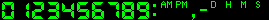
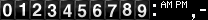
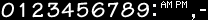
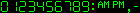
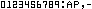
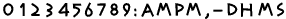
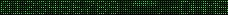
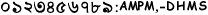
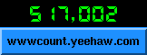

|
|
|
| Count 2.5 Last Updated: | Nov 11, 1999 |
| Count 2.5 Released: | Jan 3, 1999 |
| Count 1.1 Released: | Apr 12, 1995 |
|
|
The counter needs mirror homes. You can only become an official mirror site, If you are an ISP or owner of the domain or authorized by your employer to do so. The counter page gets about 1500 (Fifteen hundred) hits/day on average. I appreciate your help on this.NewsHow to mirror the counter pages:
Step 1 - Install GNU wget. GNU wget is a nice web mirroring and retrieval software. It runs on Unix as well as MS NT/95. The program wget is available from:
- The main GNU Archive or
- by ftp from the author Hrvoje Niksic.
Step 2 - Decide the name of the directory you're going to mirror the counter pages. This directory must be a valid web server document directory. For example, if your web server document root is /usr/local/apache/htdocs and you want to keep the counter pages in the directory /usr/local/apache/htdocs/Count, then the wget command will look like below:
/usr/local/bin/wget -nH -r -np -N -R index.html -L -X cgi-bin \ -P /usr/local/apache/htdocs/Count \ -o /usr/local/apache/htdocs/Count_mirror.log \ --cut-dirs=2 \ http://www.fccc.edu/users/muquit/Count.htmlExplanation of the wget options used:-nH don't create host directories -r recursive web-suck -np don't ascend to the parent directory -N don't retrieve files if older than local -R index.html don't bring index.html -L follow relative links only -X cg-bin exclude cgi-bin directoyr --cut-dirs=2 ignore 2 remote directory components (/users/muquit) -P /foo save files to directory /foo -o /file.log The log will be written to this file. http://xyz/ mirror this URLAlternatively, if you installed the counter, a helper script is supplied to help you in mirroring. The script mirror_count.sh is intalled in the base directory of the counter. Edit the script first, modify the variables wget, dir and log.
Try the first transfer from command line and then when you're sure it works properly, setup a cron job. Again, carefully check the argument to -P and -o.Step 3 - Setup a cron job so that wget will check periodically if anything changed in the counter pages. If I change anything I usually upload around 11 PM US Eastern Standard Time (GMT-5). So, I would suggest to setup the cron job at your localtime corresponding to GMT-5. For example, if you're in the US east coast, setup the cron job to run at 12 midnight everyday:
0 0 * * * /usr/local/bin/wget -nH -r -np -N -R index.html -L -X cgi-bin -P /usr/local/apache/htdocs/Count -o /usr/local/apache/htdocs/Count_mirror.log --cut-dirs=2 http://www.fccc.edu/users/muquit/Count.html > /dev/null 2>&1Make sure there is no line break in the above command in the crontab file. I broke it up just to fit it in the page.
Again, if you installed the counter, just call the script mirror_count.sh, example:0 0 * * * /usr/local/etc/Counter/mirror_count.shThe 0 0 indicates 0 minutes and 0 hours (that is midnight). If you do not live in the US, adjust this time to GMT-5. For example if you live in UK, it will be 0 5. Note, wget will only transfer the pages modified since the last transfer, so the transfer traffic will be minimal.Step 4 - Let me know by dropping me a line, so that I can list your site and URL. Please specify the geographic location of your site. Provide a URL if you like it to be mentioned in the credit below the mirror link. Also let me know if it is ok to mention your email address.
The WWW Counter program is continually being enhanced. Please check this section periodically to see the latest enhancements and bug fixes. Please look at the section ChangeLog for the list of past enhancements and bug fixes. Please look at the Section Features for all the features.Requirements
LZW compression in GIF is OFF by default. If you want to make the counter with LZW compression, edit the file libs/combine/Makefile.in and uncomment the line ##HAS_LZW= -DHAS_LZW=1. Please do so at your own risk as Unisys has the right to charge you $5000.00 for using compressed GIF files. Without the LZW compression, the GIF image the counter generates will be bigger.
Read more about it:
http://corp2.unisys.com/LeadStory/lzw-license.html
http://burnallgifs.org/Note NT binary still has LZW support, I'll remove it as soon as possible. I'm in the process of adding PNG support.
(Nov-11-1999)
A new parameter cdf is added, to specify countdown from date so that the difference between two dates can be shown if you specify the target date witht he parameter cdt.
(Jul-17-1999)
Fixed some memory related bugs. Modified the Commaize() funtion, it had a memory free related bug. remote_ip var had dangling memory read problem. All memory related bugs were fund by Parasoft's insure++.
(May-26-1999)
The binary version of the current release for NT is available. Please visit the NT binary page.
(May-25-1999)
Compositing the counter on a base image had many bugs. All are fixed I think. Now you can composite counter, clock or countdown image on a base image (previously only counter image could be composited). Left padding the counter while compositing was not working either. The align keyword had more values now, namely topleft, topcenter, topright, midleft, midcenter, midright, bottomleft, bottomcenter and bottomright. A new keyword offset can be used with align to specify the offset (in pixels) of the counter image from the edge of the base image.
(May-16-1999)
The meaning of image parameter is changed. Now this parameter is used for compositing the counter, clock, date or countdown image. If no display paramter is used, the default is to composite the counter image.
(May-16-1999)
A new boolean keyword sdhms (show day hr min sec) is added, so that only days in countdown can be displayed.
(May-16-1999)
A new parameter display=version is introduced to show the version of the counter. A command line flag -version also can be used to find out the version of the counter.
(May-16-1999)
Yes it includes the Buffer Overflow security fix (Fixed on: Oct-17-1997 in Count 2.3).
Supported PlatformsA C compiler (ANSI or non-ANSI) if you are installing it on Unix.
You should be familiar with Unix operating system in order to install it on Unix. I think if you know what ls command is, you qualify. If your site is configured to run CGI programs from users' space, then you will not need root access otherwise root access is needed.
If you are installing on NT, a self extracting binary is available. Setup Wizard will guide you through the installation.
You must run a web server. The web server must be capable of running standard CGI programs. If you run several web servers in your domain, you can install the counter in one server and allow the users at other servers to access the counter remotely.
The web server must be running on any of the Unix, NT, OS/2, VMS or Amiga Operating System.
It is reported that the program runs on the following platforms:
Operating System First reported by AIX 3.2.5
AIX 4.2.1robtuck@coeibm.rutgers.edu
Matthew Stevenson, stevenma@shu.eduAmiga albertv@spinnewiel.xs4all.n (ported by) AU/X jussi.haro@tothepoint.fi BSDI chris@technonet.com DEC OSF1 ma_muquit@fccc.edu DG/UX irrigacion@planet.losandes.com.ar DomainOS 10.4.1 (on Apollo Workstns) philippe.hubaut@etud.insa-tlse.fr FreeBSD 2.1.5 tomcat@1lo.lublin.pl HP-UX takao.tsukiyama@tokyo.tohmatsu.co.jp Linux ashley@photocraftlab.com NetBSD makoto@komekome.bay.prug.or.jp NEXTSTEP 3.3,3.2,4.0 for Mach
(Motorola,Intel)jk@exnext.com NT 3.51 (intel) ma_muquit@fccc.edu NT 4.0 with IIS 2.0 srakhtar@ix.netcom.com Win98 Scott PowerMachTen Alex Kac, alex@WebIS.net (compiled and ported) SunOS 4.1.x ma_muquit@fccc.edu Solaris 2.x ma_muquit@fccc.edu SCO yuqiao@UDel.Edu SGI ma_muquit@fccc.edu SINIX 5.4 (SVR4, MX500I by Siemens Richard.Bothe@mch.sni.de ULTRIX 4.3 mbarria@ing.puc.cl UnixWare 2/2.03 ebh@fpk.hp.com
ivanlan@tzuk-te.callware.comVMS phil@pottsoft.demon.co.uk (ported by) Win95 null@dent.showa-u.ac.jp
OS/2 dshields@direct.ca (2.3,2.5) (ported by)
This is a CGI program to keep record of the raw hits of a web page. It generates a GIF image of the number of hits and returns to the browser as an in-lined image. The program also has a run-time option not to show the digit images, this way the hits can be kept without displaying it. The hits can be be monitored without incrementing from a separate page as well. The program can also can display time and date of any timezone. It has a option to countdown to a specific date (past or future). Almost all of the features are run-time options. This program started as a fun-to-play-with CGI program but due to enormous interest, feature request, input from thousands of you, it has turned in to the most configurable hit counter on the whole World Wide Web and it's free. The program runs on almost all Known Unix platforms, Windows NT, OS/2, VMS and Amiga.Features
Directory Structure (unix)Does not require server-side includes.
Countdown to a specific date (past or future). Countdown can be done in reference to local server time or any timezone with the parameter timezone. Two new keywords are added: display=countdown and cdt=year;month;day;hr;min;sec. If display=countdown is used and no cdt is specified, the default countdown to Year 2000 is assumed. The current time and date can be displayed below the countdown if the sfd=T is used. Please look at the Options section and FAQ Question# 28 for details. Also look at the Examples section to see how it looks.
(new in this release)
Site admin can decide to count or ignore page reload via a keyword ( count_reload) in configuration file. If the site admin decides to count reload (count_reload=Yes), then a user can choose to count or ignore reload with parameter reload=T or F. Note, if the side admin decided to ignore reload, then the user preference is ignored.
(new in this release)
The counter image can be composited with a base image to a specific location. New keyword: xy=x;y (Sub-image x and y co-ordinate). The parameter align can be used to specify the width and height of the counter image in the <img src= tag while calling the counter. The implication is, if the counter is the first thing in a large table, the browser will not have to wait to calculate the width and height of the counter image before loading the rest. Please look at the Examples section to see how it works.
(new in this release)
The site admin can log the counter messages in the log file or ignore the messages by specifying a keyword and value (log_error_messages=Yes or No) in the configuration file in section [options].
(new in this release)
The maximum number of digits the counter can count and display can be very high. By default the maximum number of hits can be (10^80)-1, which is a very large number (99999999999999999999999999999999999999999999999999999999999999999999999999999999), that is if data is not edited by hand, practically it is impossible to overflow the counter.
Wild card can be used in the IPs in ignore host block in the config file. There is no limit for number of IPs (as long as memory is not exhausted).
Wild card can be used in the hosts/IPs in the auth block of the config file. There is no limit for number of hosts/IPs (as long as memory is not exhausted).
The counter can count with image= parameter if df= parameter is specified.
Count or ignore Consecutive reloading a page from the same host a configurable option in the count.cfg file (used to be a compile-time option). (Added on: Dec-13-1998).
"cache" and expires" parameters can be used to change the caching behavior of certain browsers.
Date in clock is Year 2000 safe. Note, you will not see full year in the counter until the year 2000 arrives unless you use the parameter fy, or specify YYYY with the option dformat.
Uses image strip as well as individual digit images. Using an image strip reduces disk i/o significantly, therefore, it's faster. A program (mkstrip) is supplied to create an image strip from individual digit images.
Comma can be displayed after every 3rd digit from right.
Any one color of the image can be changed on the fly.
Uses netmasks to mask out a range of hosts in the network or the entire network.
Automatic datafile creation, strict mode, use of rgb color database can be controlled from the cfg file at run time.
Any arbitrary GIF file can be displayed. Frame and other attributes of the counter can be applied to the GIF file.
Count 2.0 is backward compatible with Count1.5's URL. One thing to note, the keyword wxh has no meaning in Count 2.0. It was used in Count 1.5 to specify digit dimensions. In Count 2.0 it is not required, because the digit dimensions are determined automatically. Therefore, you can use variable width digit images in this version.
Reasonable default for all QUERY_STRING parameters.
The same program can be used to display time or date.
The time and date of any timezone in the world can be displayed. The time can be displayed in 12 or in 24 hour format.
Supports digit images with variable width.
Counter can be displayed without incrementing (for monitoring etc.)
A literal digit string can be displayed.
A random digit string can be displayed.
The color of the digits can be negated.
The counter can be rotated (only integral of 90 degrees, 90,180,270). The default rotation is 270 degrees.
An ornamental 3D frame can be wrapped around the counter image with user defined thickness and color at run time.
The frame and transparent color can be a name (e.g. red,green,pink etc.). The color can be specified as a hex string, e.g. ffffff, ff0000 etc. as well as RGB triplets as before.
Single program for any number of users for any number of web pages.
Any color of the counter image can be made transparent at run time.
Style of digits can be specified at run time.
Authorized host names can be in the configuration file. Authorized hosts are those which can run the counter remotely. Do not confuse this with visitors from certain hosts.
IP filtering through a configuration file at run time. Any number of hosts can be ignored from counting. A netmask can be used to filter out a specific range of hosts in a network or to filter out the entire network. It's a good idea to ignore your own host or entire domain. Gen-conf program will let you create the configuration file interactively.
Data file locking. Data file will not get clobbered by simultaneous Count.cgi processes. NOTE, locking may not work if the counter's datafile is on a NFS partition.
Maximum number of digits can be set or counter can be displayed with exact number of digits at run time.
User will be able to specify a start-up counter value at run time. This will take effect if the data file does not exist. You will be prompted by the configuration program if you want this feature or not.
If you do not want to display the counter but like to keep the hits on your page, sh=0 can be defined in the QUERY_STRING at run time. It will write a 1x1 transparent GIF image to the browser but the counter in the data file will be incremented properly.
Before going to the configuration procedure, please browse through the default directory structure below. It will help you answer questions about the configuration script. You can change the name of the directories as you please, but keep the directory structure same, it will make your life much easier. You do not have to create any of these directories, they will be created for you by the Count-install program. The only things you probably have to create are the individual datafiles (keep reading).Digit Styles (all platforms)
/usr/local/etc/Counter <- Base Directory |-- Log <- Log Directory | `-- CountX.X.log <- Log file |-- conf <- Conf Directory | `-- count.cfg <- Configuration file |-- data <- Data Directory | |-- sample.dat <- data files | |-- joe.dat | |-- harry.dat | `-- | |-- digits <- Digit Directory | |-- A | | `-- strip.gif | |-- B | | `-- strip.gif | |-- C Digit sub-directories and | | `-- strip.gif image strip of different styles | |-- D | | |-- lenna.gif | | `-- strip.gif | |-- E | | `-- strip.gif | |-- cd | | `-- strip.gif | |-- cdd | | `-- strip.gif | `-- cdr | `-- strip.gif `-- rgb.txt <- color name databaseBase Directory is the directory where all the sub-directories and the files related to counter reside.
Log Directory is the directory which holds the counter Log file. counter error messages and remote access warning messages are written to this directory.
conf directory holds the configuration file for the counter. This file is created by the program Gen-conf and can be hand crafted later. After creating the file, please read the comments in the file.
data directory holds all the datafiles for the counter. The datafiles stores the access counts of web pages. Each page must have a separate datafile. The datafile is specified at run-time. You will know about it later.
digits directory holds sub-directories with various styles of GIF digits. For example, A sub-directory holds the green led digits. The sub-directories have GIF digit files named zero.gif, one.gif...nine.gif. you will know about it later.
rgb.txt file is used to convert a color name (for example, cyan) to the appropriate red, green and blue color component. This file came from X consortium and is supplied with the distribution. You will know about the file later.
The digits used in this program can be individual GIF files or all the digits can be in a single image strip. This gives you the flexibility of using digits of your choice. If you have individual digit images, they are named as zero.gif, one.gif,.... nine.gif, colon.gif, am.gif, pm.gif, comma.gif, dash.gif, d.gif, h.gif, m.gif and s.gif.If you have an image strip, the strip is named as strip.gif. At run-time, the directory of the images is simply used to specify a different style. Therefore, a single program can display digits of various styles. Here are the supplied digit styles. I will not supply individual digit images anymore. All the styles of digits are supplied as a single image strip. Note the order of the digits (you will know about it later).
Style A  designed by the author. D, H, M, S segment added by Andrew Taylor
(digits/A/strip.gif)Style B  Borrowed from HTML-access counter. (digits/B/strip.gif) Style C  designed by benjamin@pop3.oro.net
(digits/C/strip.gif)Style D  designed by the author
(digits/D/strip.gif)Style E  designed by the author
(digits/E/strip.gif)Style cd  made by the author on SGI with GIMP running on Linux. D,H,M and S are needed for countdown option.
(digits/cd/strip.gif)Style cdr Contributed by Mike Casper.
(digits/cdr/strip.gif)Style cdd  Contributed by Sebastian Hartman
(digits/cdd/strip.gif)Style bang  Bangla digits. Made with GIMP by the author.
(digits/bang/strip.gif)For a huge collection of GIF digits, check out the Digit Mania page. If you design some cool digits and like to share with others try sending them to Digit Mania instead of me.
Some other sites:
This program will work with any digits from the Digit Mania page. To use those digits, create subdirectories say, F, G, H, foo etc. inside the digits directory and rename the images to zero.gif, one.gif..nine.gif. I suggest you create an image strip out of these digits and use it instead of using individual images.
Before using these digits, please read the sections How to use other styles of digits and How to create an image strip.
Download source/binary (Link)
Steps to compile and install (Unix)
You can compile with default settings or you can specify your own settings. To compile with the default settings (very simple), please go to the sub-section Compilation with default settings. or if you want the ability to change the default settings, at the shell prompt (shell prompt is where you type ls, read your mails etc.), type the following commands in the described order and press Return key:Steps to compile and install (NT) - optionalStep 1
make config.hThe script Count-config will be executed. The script will ask questions with brief description. The script will generate the header file src/config.h. Look at the directory structure image to better understand the questions.
Look at a sample sessionStep 2
Step 3make allThe configured script will be executed first to create the Makefiles (libs/mcfg/Makefile, libs/combine/Makefile, libs/bigplus/Makefile, utils/mkstrip/Makefile, utils/extdgts/Makefile and src/Makefile) for your system. Then the programs Count.cgi, mkstrip and extdgts will be compiled and copied to the bin directory.
make cfgThe script Gen-conf will be executed to create the counter run-time configuration file count.cfg. This script will ask you questions about your system. Answer them. This process will create the configuration file for the counter. Note: if your hostname has more than 3 parts, like foo.bar.x.com, than the script will not take it. Just enter a 3 part name and then go back and edit the file by hand with your favorite text editor. Look at a sample sessionStep 4
make installThis is the final step. The script Count-install will install the necessary things for the counter in your system. You will need root access if you are installing it an area where root access is needed. This program will ask you some questions.If you finished all the above steps successfully, you are ready to test the counter.
Compilation with default settings
Look at the Directory Structure section for the default directory structure of the counter. Please follow the steps below if this directory structure is OK with you:Step 1
make allStep 2
First edit Config.tmpl, modify CGIBIN_DIR to specify the correct path of the cgi-bin directory. Do not change anything else in this file. Then, at the shell prompt, type:
make installLook at the Configuration file section. Authorize your host by adding it in at [authorized] section.
Test the program from command line (Unix/NT)First ask yourself if you really need to compile. A compiled version is already supplied for you convenience. You will only need to compile if you want to change some default characteristics of the counter. I compiled the program on NT 4.0 (Intel) with MS Visual C++ 5.0. The makefiles supplied are also for MS Visual C++ 5.0. If you use some other kind of compiler, you are on your own.
Assuming you've already downloaded and extracted the sources from the archive. Open a command shell window and perform the following steps:
1. cd wwwcount2.5 2. Edit the file src/configNT.h and see if anything needs to be changed 3. nmake -f makefile.wntThe above procedure will create the executable src/Count.exe. Copy the file Count.exe to your cgi-bin or scripts directory or wherever you keep the CGI programs. copy or move the directory data as wcountto the same directory where you copied the program Count.exe (if you edited the file configNT.h and changed the location, copy it there). Read the section How to call the program?The utility programs utils/mkstrip/mkstrip.exe and utils/extdgts/extdgts.exe will also be compiled. Please read the section How to create an image strip to know how the programs mkstrip.exe and extdgts.exe work.
A shell script is provided to test out the various features of counter. To test the program, at the shell prompt, type:How to call the program? (all platforms)cd tests ./testcount-shThe program will create a file called Count2_5-ex.html. Load this file to your web browser to see the result of the tests.You can test it out in NT as well, provided you installed the tools from GNU-Win32 project by Cygnus. These tools provide a fairly complete Unix-like environment in NT and they're free.
If your web server is running on On Unix, you can refer to the program from web page like this:Counter options (all platforms)If the web server is running on Unix:
<img src="/cgi-bin/Count.cgi?df=sample.dat" align="absmiddle">If the web server is running on NT:<img src="/cgi-bin/Count.exe?df=sample.dat" align="absmiddle">Note: in Unix, the .exe extension is not used to determine a executable. You can call your program anything you like. So, if your server is not on Unix, the name of the counter program will be Count.exe instead of Count.cgi.The string after the ? mark is called the QUERY_STRING. Make sure there are no newlines in the <img src= line and no space in the QUERY_STRING. In df=sample.dat, df means datafile and sample.dat is the counter datafile. The counter stores the hits in this file. This datafile is supplied. If you configured the counter to allow automatic datafile creation (look at count.cfg file), you can specify a datafile with df like df=count.dat. The file count.dat will be created for you if the permission to the data directory is correct.
If you configured not to allow automatic datafile creation (good thing), you have to create this file in the data directory. Change directory (cd) to the data directory and type:
echo "1" > count.datIn NT, go to Command Prompt from Start->Programs and do the same.The counter program has lots of options, you can make it work and look the way you desire. In the query string, you can use the options described in the table below. The options can be separated by a | or a &. You can use either one or combination of both but I prefer to use & as some browser may not like |. Here is an example:
<img src="/cgi-bin/Count.cgi?ft=4&frgb=gold&df=sample.dat" align=absmiddle>The options can be in any order and not case sensitive.
Anyway, look at this Example Page you will get the picture.
Keywords
| align | - align counter image on a base image. |
| cache | - and expires are used to change caching behavior of the browsers. |
| chcolor | - change one color of the counter image. |
| cdt | - countdown target date. |
| cdf | - countdown from date. |
| comma | - show comma after 3rd digits from right. |
| dd | - digit directory. |
| degrees or angle | - rotation angle of the image. |
| df | - counter data file. |
| dformat | - date format. |
| display | - counter, clock, date, countdown or image. |
| frgb | - Frame color. |
| ft | - Frame thickness |
| fy | - Full year (all digits). |
| image | - Display a GIF image. |
| incr | - Increment the counter or not. |
| istrip | - Use strip.gif or not. |
| lit | - Show literal string. |
| md | - Maximum number of digits to display. |
| negate | - Show the negative image of counter. |
| offset | - Offset from the counter image from the edge of the base image while compositing. |
| pad | - Left pad with zeros or not. |
| reload | - Count page reload or not. |
| rotate | - Rotate the counter image. |
| sdhms | - Show the day, hr, min, sec in countdown or not. |
| sfd | - Show "from" date while showing countdown. |
| sh | - Show the counter or keep it hidden. |
| srgb, prgb | - Change source color to pen color. |
| st | - Start count number. |
| timezone | - Show time of that time zone. |
| tformat | - Time format, 12 or 24 hr. |
| tr | - Transparency On or Off. |
| trgb | - Transparency color. |
| xy | - Composite the counter at x,y location of a base image. |
| Parameter | Name | Description | Default |
|---|---|---|---|
|
cache=B expires=X |
These parameters can be used to change the image caching behavior of certain web browsers. |
The boolean value of cache tells the browser whether to
cache the image or not.
The integer value of expires specifies the cache
expiration duration time in seconds.
If you specify cache=F, the browser
will be hinted to cache the image for the amount of seconds
specified with expires parameter. if cache=F and expires=0, then
the browser should not cache the image, that is whenever you
come back to the page, the counter or clock will be refreshed.
Use this feature with discretion as it may increase load on your
system. The expires parameter is meaningless without
cache=F, that means, if cache=T is specified, expires
parameter is ignored and the counter will not generate any
HTTP Expires header. This is the default behavior.
The valid values for the boolean parameter cache is Y,N,F,T 1 or 0.
The valid integer range of the expires parameter is between 0
and 604800 (7 days).
Note, these parameters will work with browsers that support the HTTP Expires header as specified in HTTP specification. By default, most web browsers cache the image received from the counter. That means, if someone visits your page and comes back after a while, the counter or clock does not get refreshed. |
cache=T expires=0
|
| reload=B |
Count page reload if the site admin configured the counter to
support it. (Added on: Dec-05-1998) |
If the site admin configured the counter to count reload, users can choose to count reload (default) or ignore reload. The site admin allows count reloading by yes, 1 or true in the [options] section of the configuration file with the keyword count_reload. Note, if the admin decided to ignore reload count (count_reload=No), user preference is ignored. The valid values for the Boolean parameter reload are Y, N, T, F, 1 or 0. |
reload=T Count reload if site admin configured to so. |
| cdt=year;month;day;hr;min;sec (Added on: Dec-13-1998) | Show the countdown time to this target date. | The parameter cdt specifies the countdown target date. The valid values for this parameter is 6 integers separated by semicolon. The first integer specifies the year, for example: 2000. The month starts at 1 (January). The first day is 1. Note: in Unix systems, the year can not be less than 1970 as Unix epoch starts starts at 00:00:00 on January 1, 1970, Coordinated Universal Time (UTC). The range of hr is 0 to 23. The range of min is 0 to 59 and the range of sec is 0 to 59. To count down to Year 2000, the parameter will be: cdt=2000;1;1;0;0;0. If you do not specify any Timezone with the parameter timezone, the countdown will be calculated from the web server time. For example if you like to show the countdown from GMT, specify timezone as: timezone=GMT+0000. | None |
| cdf=year;month;day;hr;min;sec (Added on: Jul-17-1999) | Show the countdown time from this date. | The parameter cdf specifies the countdown from date. The default is to calculate from the current local time or local time of a specific timezone if the parameter timezone is specified. The valid values for this parameter is 6 integers separated by semicolon. The first integer specifies the year, for example: 1999. The month starts at 1 (January). The first day is 1. Note: in Unix systems, the year can not be less than 1970 as Unix epoch starts starts at 00:00:00 on January 1, 1970, Coordinated Universal Time (UTC). The range of hr is 0 to 23. The range of min is 0 to 59 and the range of sec is 0 to 59. | The local web server time. |
| sdhms=B | Show the day, hr, min, sec in countdown or not. | This parameter affects how the countdown is displayed. The valid values for the Boolean parameter sdhms are Y, N, T, F, 1 or 0. By defualt, the value for this parameter is True, that means the countdown is shows as Day, Hour, Min and Sec. If you just want to show the countdown days, specify F as the value. | sdhms=T |
| sfd=B | Show from date (sfd) below the countdown. | The parameter sfd shows the from date below the countdown. The from date is the time when the program is executed. The time in date is always in 24 hr format. If you use the parameter timezone, the timezone offset will be shown at the end of time. It may be necessary to see this date to make sure that the Counter program actually ran and the browser is not loading the image from cache. Use cache=F&expires=0 to make sure that browser does not cache the image. The valid values for the Boolean parameter sfd are Y, N, T, F, 1 or 0. | sfd=F |
| display=X | Specifies what to display. | The valid values for X is: counter, clock, date, countdown, image or version. If the value is countdown and if the countdown time is not specified with parameter cdt, the countdown to year 2000 is assumed. See also: cdt. Note: If you specify display=image and if you specify a datafile with df parameter and if incr is true, then counter will be incremented in the datafile. This will help some people who do not like to show the counter, instead they can show an image. You can use incr=F from another page to monitor the counter. | display=counter |
| timezone=X | Display time/date of the specified timezone. |
The parameter timezone= is only significant with
display=clock,
display=date or
display=countdown
Use this parameter
if you want to display time or date of another timezone or calculate
countdown in reference to a timezone to a target date.
The timezone must be specified with a negative or positive
four digit offset from GMT, for example: timezone=GMT-0500 or
timezone=GMT+0000 or timezone=GMT+0530.
The routine to display time of various timezones are written in a
generic way. Therefore, the unix machines will not be aware of
daylight saving time because of the way the routine is written. For
example, if daylight saving time is on, to display time of NY, the
timezone will be timezone=GMT-0500 instead of
timezone=GMT-0400. If the clock displays your local time wrong, specify your timezone with that parameter in order to display the correct time. |
None. |
|
tformat=X
|
Time format in 12 or 24 hour. | This parameter can be used to display time in 12 or 24 hour format. The valid values for the parameter X is 12 or 24. | tformat=12 |
| dformat=X | Specifies date format. | This parameter is only significant with display=date. The valid value for the string parameter X is any combination of MMDDYY (Month-Day-Year). For example, dformat=ddmmyy, dformat=YYMMDD. To show the full year in the display instead of two digit year specify YYYY instead of YY, for example dformat=MMDDYYYY. To show full year you can also use the parameter fy. | dformat=MMDDYY |
| fy=B | Show the full year (fy) in the date instead of only two digit year. | This boolean parameter indicates whether to show all the year digits instead of default two digits in the date. By the way the program will display all the year digits by default from Year 2000. The valid values for the boolean parameter fy are Y,N,T,F,1 or 0. See also: dformat. | fy=F |
| istrip=B | Use of image strip On/Off | The boolean value of istrip specifies whether to use image strip or not. If you specify istrip=F, the program will look for the individual digit image files in the digits/style directory. The valid values for the Boolean parameter istrip are Y, N, T, F, 1 or 0. | istrip=T |
| ft=X | Frame Thickness | You can wrap the counter in an ornamental frame of X pixels thick. Use 0 for no frame. Values over 5 make a nice 3-D effect. | ft=4 |
|
frgb=R;G;B or frgb=RRGGBB (in hex) |
Frame Color |
Specifies the color of the frame in RGB (red/green/blue)
format. Each color component, R, G, and B is specified as a
value between 0 and 255. If you use ft= without a frgb=
param, the default color is used.
If you specify a frgb= without a ft=, then the frame thickness defaults to 5. All the examples show ft=5. The color can be specified as hex string or a name. Do not use a # before the hex string as Netscape. For example, if you want to specify white in hex, use frgb=ffffff. You also can use a color name (e.g. frgb=blue) if the counter is configured to do so (look at the cfg file). Look at the color name mapping database for some hints about color name database. |
frgb=100;139;216
or frgb=648bd8 |
| tr=B | Transparency On/Off | You can specify if your counter image will have a transparent color with the Boolean B. So tr=Y means there will be a transparent color. It does not matter if the GIF files used for the digits are "transparent"; you must specify explicitly which color to make transparent. If you specify a trgb=, then you do not need to specify tr=Y. If you specify tr=Y and do not specify trgb=, then the default color black will be transparent. The valid values for B are Y, N, T, F, 1, or 0. |
tr=F
No Transparency |
|
trgb=R;G;B or trgb=RRGGBB (in hex) |
Transparency Color | Specifies the color to be made transparent in RGB (red/green/blue) format. Each color component, R, G, and B is specified as a value between 0 and 255. If you use tr= without a trgb= param, the default color is used. The color can be specified as hex string or a name. Do not use a # before the hex string as Netscape. For example, if you want to specify white in hex, use trgb=ffffff. You also can use a color name (e.g. trgb=blue) if the counter is configured to do so (look at the cfg file). Look at the color name mapping database for some hints about color name database. If you use trgb= then tr=Y is not needed. |
trgb=0;0;0
or trgb=000000 |
| md=X | Max Digits | Defines maximum number of digits to display. Any value between 5 and 80 inclusive are permitted. Padding with leading zeros is automatically done for you; longer counts are truncated to the given X. |
md=6
Without padding |
| pad=B | Left padding with 0s | Turn padding on/off in conjunction with md= setting. It also affects padding hour in clock. Valid values for the Boolean parameter B are Y, N, T, F, 1, or 0. |
pad=N
Without specification of a md=value
pad=Y |
| dd=A | Digit Directory | Denotes directory of a specific styles of digits. Four styles of digits are supplied. They are kept at the directories A,B,C and D respectively. Visit the digit mania page for other styles of digits. |
dd=A
My green LED digits |
| image=gif_file | Display this GIF file | You can display any GIF image specified with this parameter. The location of this file is determined by the dd= parameter. Note that no path in the GIF file is allowed. All attributes of the counter apply to the image. This parameter is used for compositing counter image with the GIF image. The default alignment is top-center and the default offset is 2 pixels from the top of the GIF image. If you want to composite clock, date or contdown, specify so with the display paramter. | None |
| comma=B | Display comma after every 3rd digit from right. | The boolean value of parameter comma specifies whether to display comma after every 3rd digit from right. If you use this parameter as true, the left padding with zeros will be turned off. | comma=F |
|
srgb=R;G;B or srgb=RRGGBB (in hex) prgb=R;G;B or prgb=RRGGBB (in hex) |
Change a color of the image to a target color on the fly. | Any one color of the image can be changed to a different color on the fly. srgb stands for source color, that is the color to change. prgb stands for pen color, that is the target color. The values for srgb and prgb can be colon separated color components (e.g, srgb=255;0;0), a hex value (e.g. srgb=ff0000) or a color name (e.g. srgb=red). The color name can be used if you configured the counter to do so (look at the cfg file). |
srgb=00ff00 (0;255;0 green)
prgb=00ffff With chcolor=T |
| chcolor=B | Change a color of the image. | This parameter is usually used to change the default green color to cyan. That is if you specify chcolor=T, and you want to change green to cyan, then you do not need to specify srgb and prgb parameters. 1x1 GIF is displayed. The valid values for the Boolean parameter B are Y, N, T, F, 1, or 0 | chcolor=F |
| st=X | Start Count | This parameter is used to set the initial value of the counter to some number X. This is only valid if you decided to allow automatic datafile creation. It is a bad practice to allow automatic datafile creation, however it makes site maintaining easier. The automatic datafile creation option is specified in configuration file and can be changed at run time. Note that this parameter has no effect if the datafile already exists. If you want to change the counter value in a existing datafile, hand edit the file. The minimum value for st is 1. |
st=1 Count starts at 1 |
| sh=B | Show digits |
Used to turn display of digits on or off according to the
Boolean B. When sh=T, counter will be displayed and incremented,
this is the default behavior.
If sh=F no digits will show, but the counter will still increment; instead of digits a transparent 1x1 GIF is displayed. The valid values for the Boolean parameter B are Y, N, T, F, 1, or 0 |
sh=Y |
| df=data_file | Datafile to store count |
Specifies the name of the file for storing the count in. The
file must be allocated to you as was mentioned in the
"Authorizations" section above. You can use df=random
to display a random number.
One special use of the parameter is df=RANDOM. This returns a random number using the fractional portion of the host's time of day clock as a seed for the generator. Unlike all other WWWcounter parameters, the file name provided is case-sensitive, except for the value random. Or Random, or rANDOM, etc. |
df=random
if no datafile is specified |
| incr=B | Increment Count |
Makes it possible to display the current count without
incrementing the count. This can be used to examine the count
for reporting or other purposes without adding to the count.
Valid values for the Boolean parameter B are Y, N, T, F, 1, or 0.
|
incr=T
Increment the counter |
| lit=X | Display literal | Makes it possible to display a given, predetermined string. The valid values for the string X are digits, a,p,: and - | None |
| negate=B | Negate the color | Makes it possible to negate the color of the counter digits. Note that the Frame is exempted from negating. Valid values for the Boolean parameter B are Y, N, T, F, 1, or 0. |
negate=F
Do not negate |
|
degrees=X or angle=X |
Rotate X degrees | Makes it possible to rotate the counter image X degrees. The possible values of X are 90, 180, 270 and 360. Note 360 is meaningless as the counter will come back to the original 0 degrees. Note: Microsoft MS Explorer interprets °rees as the degree character (it's gotta be a bug in IE), so use angle to be safe. |
degrees=270
With rotate=Y and without degrees=X rotate 270 degrees clockwise |
| rotate=B | Rotate On/Off | The Boolean value B turns on or off rotating. If you use degrees= setting, rotate is not needed. Valid values for the Boolean parameter B are Y, N, T, F, 1, or 0. |
rotate=F
Do not rotate |
| xy=x;y | composite the counter image to a base image at the location x,y | When a base image is specified with image parameter, the parameter xy can be used to composite the counter image on the base image at location x,y. x is positive towards right and y is positive downward. The co-ordinate of the upper left corner of the base image is 0,0). See also: align. | xy=1;1 |
| align=X | composite the counter/clock/countdown image with a base image and align the counter image. | This option can be used to composite the counter on a base image (specified with image with known width and height. This way, you will be able specify the width and height of the counter image in the <img src= tag while calling the counter. The implication is, if the counter is the first thing in a large table, the browser will not have to wait to calculate the width and height of the counter image before loading the rest. The valid value for the parameter align is topleft, topcenter, topright, midleft, midright, midcenter, bottomleft, bottomcenter and bottomright. The parameter offset can be used to specify the offset in pixels from the edge of the base image. Note: xy parameter has higher precedence than align. Therefore, if both xy and align is specified xy will take the precedence. See also: xy. | align=bottomcenter |
| offset=N | Offset of the counter image in pixels from the edge of the base image while compositing the counter with an image. | The parameter offset is used with parameter align to specify the offset of the counter image in pixels from the edge of the base image while compositing the counter/clock image with an base image. If align=topleft, the the offset is counted from the top and left edge of the base image. If align=topcenter, the offset is counted from the top edge of the base image. If align=topright, the offset is counted from the top and right edge of the base image. If align=midleft, offset is counted from the left edge of the base image. If align=midcenter, offset is ignored. If align=midright, offset is counted from the right edge of the base image. If align=bottomleft, offset is counted from the left and bottom edge of the base image. If align=bottomcenter, offset is counted from bottom edge of the base image. If align=bottomright, offset is counted from the right and bottom edge of the base image. The valid value for the paramter N is a positive integer. See also: xy. | offset=2 |
How to use other styles of digits
There are several sites including Digit Mania which maintains a array of collection of GIF digits which can be used with the counter. The counter program can use these digits in 2 ways.How to create an image strip
- Use a single image strip for digits. This is the default behavior, that is the counter program looks for a image file called strip.gif in digits/style directory by default. Using an image strip is much more efficient than using individual digits, because
- the size of an image strip is almost always less than the combined size of individual images.
- Disk i/o is significantly reduced, because only one file needs to be opened instead of many.
- use a individual digit image for each digit, for example, zero.gif, one.gif...nine.gif. These digit images reside in the digits/style directory. If you like to use the counter for clock, 3 additional digit images are required, e.g., colon.gif, am.gif and pm.gif. If you want to use comma in your counter digits, another image is required, e.g., comma.gif. If you want to use the counter to display date, one more image is required, e.g., dash.gif. If you collect digits from external source, do not forget to rename the images to
zero.gif, one.gif, two.gif, ... nine.gif, colon.gif, am.gif, pm.gif, comma.gif and dash.gifThe section How to create an image strip describes how to create an image strip from individual digit images. If you like to use the individual digits instead, you must use the option istrip=F when you call the counter from web page, because by default istrip=T.
If you have individual digit images, you can create an image strip out of them. Image strip reduces disk i/o significantly, because the counter will need to read only one image instead of many and the size of the image in most cases will be less than the combined size of the individual images.Configuration file (all platforms)A program called mkstrip is supplied to create the image strip from individual digit images. Another program called extdgts is supplied to extract individual GIF images from the strip.gif (made with mkstrip). extdgts is there to help you out if you need to extract the digit images for some reason.
To compile the programs, go to the
utilsdirectory and at the shell prompt, type:makeBefore using them, copy mkstrip and extdgts somewhere in your path, otherwise you'll get error "command not found."Now, go to the directory where all the individual digit images are and type:
mkstrip zero.gif one.gif two.gif .... nine.gif colon.gif am.gif pm.gif > strip.gifNote, the file names are not important but the order is very important. For example, the file names may be 0x.gif, 1x.gif etc.Create a directory say F inside the digits directory and copy or move the file strip.gif to F. You can use this strip with dd=F.
The above strip can be used for counter and clock but not date. It also can NOT be used if you want to display comma. If you want to use date and comma, you must have the image for comma and dash. For example, the strip of digit style A is created with the command:
mkstrip zero.gif one.gif ... nine.gif colon.gif am.gif pm.gif comma.gif \ dash.gif > strip.gifPlease note the order of the images used in arguments carefully. The program mkstrip puts the necessary information in the GIF comment extension about the strip. The counter program parses the comment extension to determine the width of the individual digits in the strip. Therefore, the strip can have digit segments of variable width.For example, the comment of the image strip of digit style A is:
15:0:15:30:45:60:75:90:105:120:135:150:165:180:195:210:225The leftmost integer 15 indicates there are 15 individual digits in the image and the next colon separated pairs are the location of left and right side of the segment of the individual images from the leftmost edge. If you look carefully you will see that the individual segment of the strip is 15 pixel wide. The height is determined by reading the image. If you use the program mkstrip, you do not need to know anything about the comment, it will be created correctly for you. It is mentioned here because it is possible you obtained a strip from somewhere and you want to add the comment to the image.
The count.cfg file contains the runtime configuration information for the Count program. The file consists of sections and parameters. A section begins with the name of the section in square brackets and continues until the next section begins. The sections contain parameters of the form keyword=value or just keyword one in each line. The file is line-based, that is, each newline-terminated line represents either a comment, a section name or a parameter. The section and the parameter names are not case sensitive. A sample configuration file is shown below:Compositing with an image###----------------------------------------------------------------------- ### configuration file for Count 2.5 ### Automatically generated from user input by the script Gen-conf ### created on: Sun Jan 3 18:15:01 EST 1999 ### Note: Configuration file format for Count 2.5 is different than ### older versions. -- mm ### The format of the file is described below: ### - Any line starts with # or ; is considered comment and ignored. ### - A section in the file is inside left and right bracket. ### - Each section has parameters below the section. ### ### Please read the Configuration section in the counter webpage for details. ### The official counter homepage is at URL: ### http://www.fccc.edu/users/muquit/Count.html ###---------------------------------------------------------------------- [version] 2.5 ##-- options section ; If auto_file_creation=Yes, then the users can create data files. It IS ; dangerous to set this option to Yes. # ; strict_mode=Yes or No. Run the program in strict mode or not. It's a good ; idea to set this option to Yes. # ; allow_rgb_database=Yes or No. Convenient to use because colorname e.g., red, ; gold etc can be used instead of rgb components of the color, however it is ; very inefficient to lookup. If your site is busy, set this option to No. # ; count_reload=Yes or No. It is a good idea to set this option to No. But ; you've to set this option to Yes if you are running a proxy server. ; Normally set this to Yes. # ; log_error_messages=Yes or No. If your site is extremely busy and if the ; counter generates lots of logs, set this option to No. Normally set this ; option to Yes. # ; show_error_messages_to_browsers=Yes or No. Set this option to No if you're ; concerned with privacy and you're sure that the counter works perfectly. ; If you set this option to No, you will not see error messages. [options] auto_file_creation=No strict_mode=Yes allow_rgb_database=Yes count_reload=No log_error_messages=Yes show_error_messages_to_browsers=Yes ; You can specify IP address of the hosts you want to ignore from counting. ; netmasks can be used to ignore a entire network or a specificrange of ; hosts in the network. Read the counter documentation to know about ; netmasks. Wild card can be used as well. one item per line. ; [ignore IPs] ; ; All possible names and IP addresses by which your host can be referred. ; These hosts can access the counter remotely or locally. Host running ; the http server must exist here. Wild card can be used. one item per line. ; [authorized] *.bar.com abcd.foo.com abcd 131.249.1.100 www.foo.com www test.counter.comThe config file is parsed each time the counter program gets accessed. Therefore, smaller the file, the better the performance. If you have thousands of entries in [ignore IPs] or [authorized] section, you'll notice performance degradation. Try using wild cards if possible.As of version Count version 2.4, referrer host names will be looked up in DNS if the program is compiled with the USE_DNS macro defined in src/Makefile. This allows you to list wild-card IP address ranges in [authorized] section of the config file. This feature can reduce a 200 line [authorized] section down to a single line. Without USE_DNS, the host name as sent by the browser's HTTP_REFERER header must be listed EXACTLY.
You can take an existing config file and modify it or use the program
Gen-confto create one. Try to keep comments in the file to a minimum. Note, [ignore ips] section only contains IP addresses, IP address and netmask or wild carded IP addresses. Never use host names in this section, they will be ignored. Netmasks can be used to get finer control to ignore a very specific range of hosts. Read the section How to use netmasks at [ignore IPs] section if you have specific need to ignore a range of hosts. Otherwise, use wild cards and be happy. The [authorized] section contains all the names and IP addresses of the hosts allowed to execute the counter remotely or locally. The name and IP of the host running the web server must be at this section.
How to use netmasks at [ignore IPs] section
This section of the document and the code to use netmasks is written by Davorin Bengez, (dbengez@znanost.hr)1. Summary of changes
`Host ignore' block contains one or more lines with IP addresses of hosts that will be ignored for counter updates.
New feature in this release is possibility to mask off groups of hosts (subnetworks) defined by corresponding network / netmask pairs. This can be useful if we wish to exclude accesses from the hosts on our campus or hosts of people developing the pages.
To accomplish this, each line in host ignore block can take two arguments. If second argument is present, first is assumed to be network address and second the netmask. If only one argument is present, it is taken as a host address or a host address with wild card.
If this concept with "network address / netmask" sounds unfamiliar, you should consult your friendly network administrator.
2. How to determine ignore hosts parameters
To configure `ignore hosts' block in configuration file, you should know at least how the network / netmask concept works. Here is a brief description.
2.1. IP Addresses and netmasks concept
IP address is a 32 bit value (four octets) that is for readability purposes written as four decimal values separated by a dot (so called dotted quad). For example, network address - in dotted quad notation
161.53.4.28is - in binary notation10100001 00110101 00000100 00011100Binary representation is what we will need to determine network addresses and netmasks.Each network IP address is contained of network and host part.
Generally speaking, networks are split into several classes. Here are three primary forms [1]:
- class A network has first octet in range from 0 to 127. First octet is network address while other three octets specify the host part. In binary notation it is something like (n - network, h - host)
0nnnnnnn hhhhhhhh hhhhhhhh hhhhhhhhThere are 27 such possible networks, each with (224 - 2) hosts.- class B network has first octet in range from 128 to 191. First two octets are the network address, and third and fourth are host address. In binary notation it is something like (n - network, h - host)
10nnnnnn nnnnnnnn hhhhhhhh hhhhhhhhThere are 214 such possible networks, each with (216 - 2) hosts.- class C network has first octet in range from 192 to 223. First three octets are the network address, and fourth is host address. In binary notation it is something like (n - network, h - host)
110nnnnn nnnnnnnn nnnnnnnn hhhhhhhhThere are 221 such possible networks, each with (28 - 2) hosts.Note: "-2" is because 0 is reserved for "this host", and 255 means broadcast, or "all hosts on this network".
Nothing stops us to divide the network given to us by a service provider into a several smaller networks. This is often done in real life.
Network is being partitioned by setting the 32-bit subnet mask in which 1's represent the network part, and 0's represent the host part if IP address. As of now, we may correctly assume that a default netmask for class B network is 11111111 11111111 00000000 00000000 (in binary, or 255.255.0.0 in dotted quad notation).
For example, if we are given one class C network (maximum of 254 hosts), and we want to partition it into 8 networks of 32 hosts per each subnetwork, we can do it as in the following example:
Example:
Let us assume that we are given class C network with address 220.105.101.0. Initial netmask is set to 255.255.255.0. To partition this network into 8 subnetworks, we need to take 3 bits from host part of the address (23 = 8). Let's write it in binary:
Network address 220.105.101.0:
11011100 01101001 01100101 00000000Netmask was 255.255.255.0:11111111 11111111 11111111 00000000As we want to have 8 subnetworks (this needs 3 bits from the host part), netmask will be: 11111111 11111111 11111111 11100000 or 255.255.255.224 in dotted quad notation.Host part of address has shrunk to 5 bits, and we will have new network address based on 25 intervals. Therefore, our new subnetworks will be:
220.105.101.0 220.105.101.32 220.105.101.64 220.105.101.96 220.105.101.128 220.105.101.160 220.105.101.192 220.105.101.224n.b. The same netmask (255.255.255.224) applies to each of the 8 networks.From previous example can be seen that netmask cannot be set on arbitrary boundary, but rather on addresses that are powers of 2.
2.2. Configuration guidelines
As a matter of fact, it doesn't matter whether your network is class A, B or C. What matters is which subnetwork or part of the network you want to mask off.
To determine whether a certain host is within a certain network, the host's address AND netmask are compared to the network address. If they are identical, host is within the given network.
Example 1: Determine whether host 161.53.4.4 is located within the network 161.53.4.0 with netmask 255.255.255.0:
since 161.53.4.0 = 161.53.4.0, host is contained within the network.
decimal binary host address 161.53.4.4 10100001 00110101 00000100 00000100 netmask 255.255.255.0 11111111 11111111 11111111 00000000 ANDed 161.53.4.0 10100001 00110101 00000100 00000000 network address 161.53.4.0 10100001 00110101 00000100 00000000Example 2:
Determine whether the host 161.53.91.7 is located within the network 161.53.91.0 with netmask set to 255.255.255.224
since 161.53.91.0 = 161.53.91.0, host is located within the network.
decimal binary host address 161.53.91.7 10100001 00110101 01011011 00000111 netmask 255.255.255.224 11111111 11111111 11111111 11100000 ANDed 161.53.91.0 10100001 00110101 01011011 00000000 network address 161.53.91.0 10100001 00110101 01011011 00000000Example 3:
Determine whether the host 161.53.91.99 is located within the network 161.53.91.0 with netmask set to 255.255.255.224
since 161.53.91.96 != 161.53.91.0, host is NOT located within the network.
decimal binary host address 161.53.91.99 10100001 00110101 01011011 01100011 netmask 255.255.255.224 11111111 11111111 11111111 11100000 ANDed 161.53.91.96 10100001 00110101 01011011 01100000 network address 161.53.91.0 10100001 00110101 01011011 00000000To set the netmask properly, and to check the configuration, you must know what addresses are being covered with certain network address / netmask combination.
Example 4:
Which host are located within the network 161.53.91.0 with netmask set to 255.255.255.224?
It is obvious that only last 5 bits are host address, since netmask will mask off upper 3 bits in last octet. Possible host addresses are from 0 (which cannot be used) up to 00011111 binary, or 31 in decimal. Therefore, hosts within given network are 161.53.91.1 to 161.53.91.31. (n.b. with above configuration, we have possible networks:
decimal binary network address 161.53.91.0 10100001 00110101 01011011 00000000 netmask 255.255.255.224 11111111 11111111 11111111 11100000
Example 5:
How can I select hosts with addresses in range 161.53.5.16 to 161.53.5.31?
It can be observed that host part is last four bits of the address, which leads to the netmask of 255.255.255.240. Network address is address of any of the hosts ANDed with netmask:
References:
[1] Douglas E. Comer "Internetworking With TCP/IP - Principles, Protocols, and Architecture" [2] Uyless Black "TCP/IP and Related Protocols"
Compositing the counter image with a base image is an interesting feature of the counter. It allows you to composite the counter, clock or countdown image with a base image of your choice. You can position the counter image anywhere on the base image using the parameter xy or you can use align to align at top, middle and bottom of the base image. The valid keyword for align is topleft, topcenter, topright, midleft, midright, midcenter, bottomleft, bottomcenter and bottomright. The parameter offset can be used to specify the offset in pixels from the edge of the base image.Examples (all platforms) (link)Here's example of Compositing the counter with a base image:

The HTML tag used to create the above image is as follows:
<img src="/cgi-bin/Count.cgi?df=sample.dat&dd=A&image=yeehaw.gif&ft=0&offset=5&align=topcenter">Note: while compositing the keyword tr and trgb for transparency makes the color of the counter image transparent not that of the base image. Also, when you're compositing, do NOT specify display=image.
Count will try to return an image in any event. That is, even if it fails for some reason, it will write the error messages in GIF format. The text error messages also will be written to the counter log file defined with LOG_FILE in the directory defined with LOG_DIR in the config.h file. The program Count-config asked about these if you remember.If you see any of these images, please check the Counter log file you defined with LOG_DIR and LOG_FILE. If the program could not create the log file, it will write the error messages to stderr. In that case if you configured your httpd server to write the log to a file, the error messages will be written to this file.
WWW Count Frequently Asked Questions (Link)
Copyright 1995-1999 by Muhammad A Muquit. Permission to use, copy, modify and distribute this program is hereby granted without fee, provided that this copyright notice appear in all copies and that both that copyright notice and this permission notice appear in supporting documentation. If the source code of the program is modified or enhanced, the source code must be made public and it must be clearly mentioned in the documentation what was modified.AcknowledgmentsTHIS PROGRAM IS PROVIDED "AS IS" WITHOUT EXPRESS OR IMPLIED WARRANTY. THE AUTHOR DISCLAIMS ALL WARRANTIES WITH REGARD TO THIS SOFTWARE, INCLUDING ALL IMPLIED WARRANTIES OF MERCHANTABILITY AND FITNESS, IN NO EVENT SHALL THE AUTHOR Muhammad A. Muquit BE LIABLE FOR ANY SPECIAL, INDIRECT OR CONSEQUENTIAL DAMAGES OR ANY DAMAGES WHATSOEVER RESULTING FROM LOSS OF USE, DATA OR PROFITS, WHETHER IN AN ACTION OF CONTRACT, NEGLIGENCE OR OTHER TORTUOUS ACTION, ARISING OUT OF OR IN CONNECTION WITH THE USE OR PERFORMANCE OF THIS SOFTWARE.
Note: This program is developed in my own time. My employer has nothing to do with it.
Thanks to John Cristy for ImageMagick. I took many routines from ImageMagick for the GIF image combining library. I borrowed the font array and some code from gd library. Thanks to Tom Boutell. Thanks to Philip A. Nelson (phil@cs.wwu.edu) for writing GNU bc. I took a portion of the library to add two big numbers. Thanks to Jordan Russell for Inno Setup. I used it to create the self extracting Counter binary for NT. Special thanks to Kevin J. Walsh. Without Kevin, the counter won't be in the current stage. Kevin did the major code overhauling in Count version 2.0. Thanks to all of you who showed interest in the counter program. I had fun writing it.I'd like to hear from you
If you are using this program, I'd like to hear from you. If you are having any problem with the program, please let me know as well. Feel free to send any suggestion. If you think that the program is cool, please consider sending me a picture postcard of the area where you live. Thanks to all of you who sent me the nice postcards. I really appreciate it.How you can helpsnail-mail:
Muhammad A Muquit Fox Chase Cancer Center Research Computing Services (C119) 7701 Burholme Avenue Philadelphia, PA 19111 USAemail: ma_muquit@fccc.edu
Thanks.
Enjoy!
I volunteer my time to develop and maintain this program. Here is a list of tasks you can do to contribute to this effort:
- If you improve the code some way, send me the context sensitive diffs or whatever convenient for you. If you port it to a new platform, encapsulate the platform specific code with ifdef. Please try to stick to my coding style if possible.
- If you've a wish list for the future releases, drop me a line and I'll try my best to implement it. If you have some cool ideas, let me know as well.
- Make this documentation better. Check for typos, grammatical mistakes and inconsistencies.
- Subscribe to the mailing list and help others.
- Report bugs.
ChangeLog (Link)